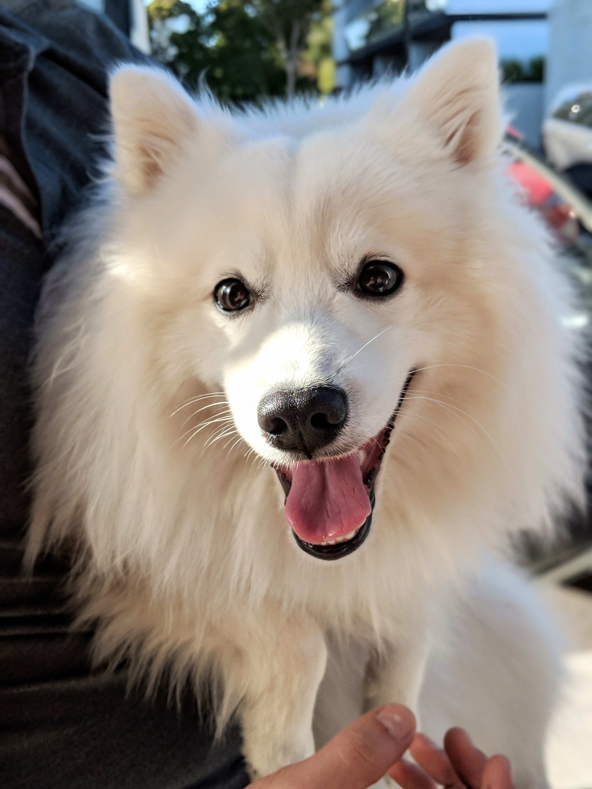

Playful, Perky, Smart this breed is perfect for a family who wants a smaller, playful pup. This pup can be a toy, miniature or a standard size.
Height: 9-12 inches (toy), 12-15 inches (miniature), 15-19 inches (Standard) Weight: 6-10 pounds (toy), 10-20 pounds (miniature), 25-35 pounds (standard)
The name American Eskimo Dog is a misnomer: The Indigenous people referred to as “Eskimos” had nothing to do with the founding of the breed. The successive waves of German immigrants that reached American shores beginning in the early 1800s had a profound impact on the development of the Midwest. German farmers who sought opportunity in America brought their Old World ways to such states as Wisconsin, Minnesota, and Ohio—and the German influence can still be felt in the upper Midwest to this day. Lutheranism, the brewing industry, and the region’s mania for German-style foods are cultural touchstones these immigrants transplanted to their corner of the New World. Another was a Nordic breed called the German Spitz, used as all-around farm dogs. These little white dogs were ancestors of the modern Eskie. By the latter years of the 19th century, it was becoming difficult to keep these beautiful, highly-trainable dogs down on the farm. Show business was beckoning. Back when traveling circuses, vaudeville troupes, and Wild West shows crisscrossed pre-electronic America, German Spitz—thanks to their intelligence, agility, and showy looks—became mainstays of trained-dog acts. (This held true well into the 20th century. Perhaps America’s most famous performing dog of the 1930s was Pierre, an Eskie tightrope walker with the Barnum & Bailey Circus.) Upon America’s entry into World War I in 1917, the country was gripped by a prejudice against all things Teutonic. The breed’s German name was changed to “American Eskimo” Dog, after the name used by a spitz breeding kennel in Ohio. Though the breed has a long and fascinating U.S. history, it was not until 1995 that the AKC registered its first American Eskimo Dog. The little white wonder dogs who performed various chores around Midwestern farms, and later charmed audiences under the circus big top, are today sought out by pet owners looking for versatile, fun-loving companions.
Resources: Eskimo
© 2020 All rights reserved.